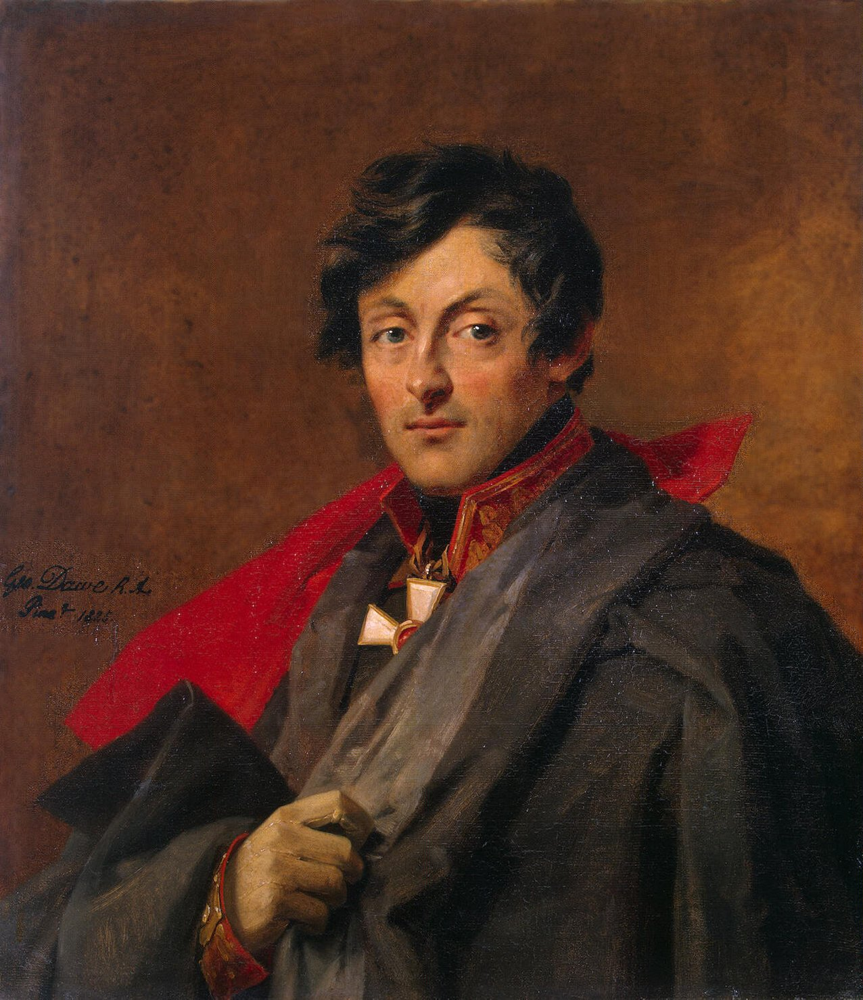
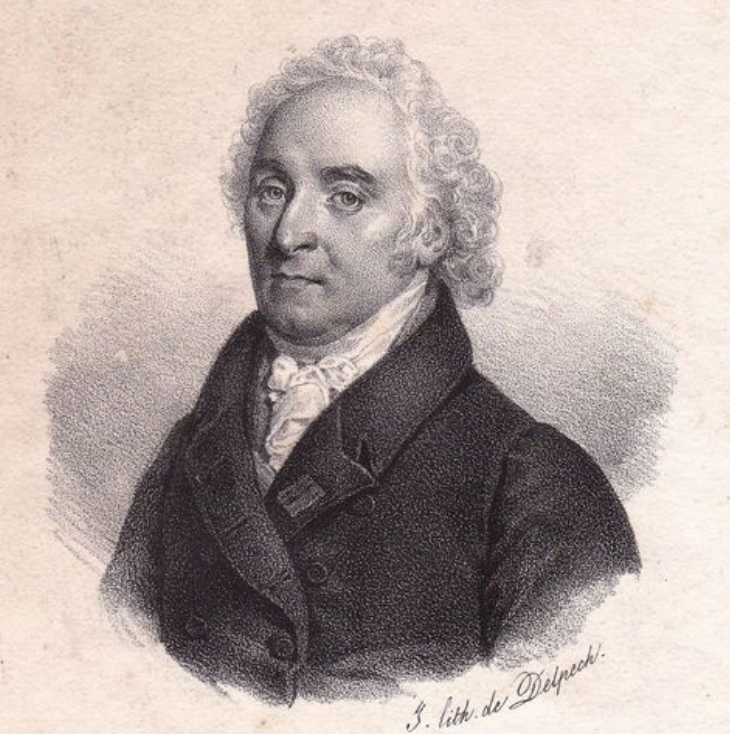
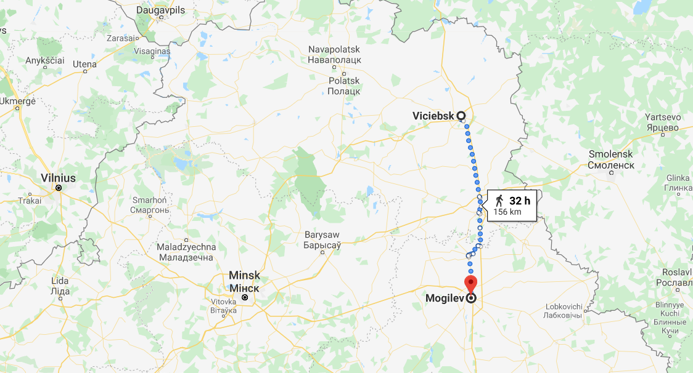
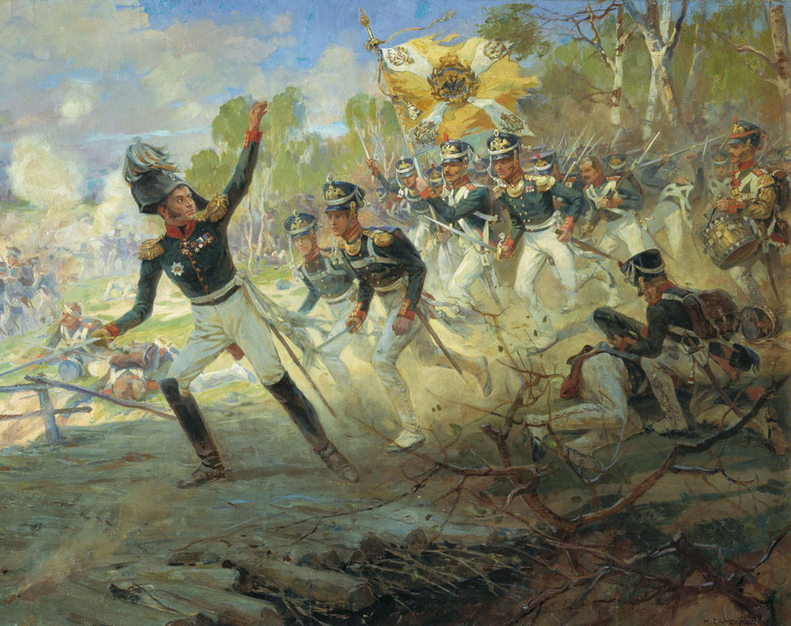
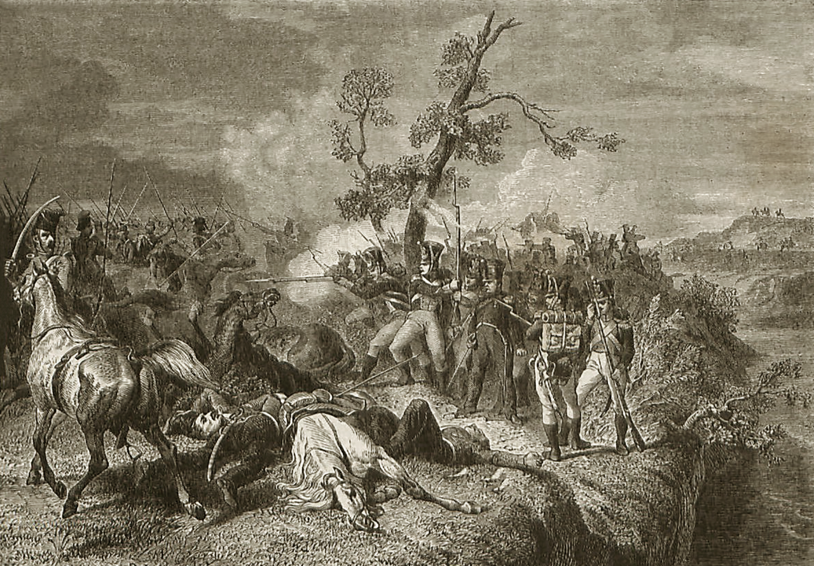
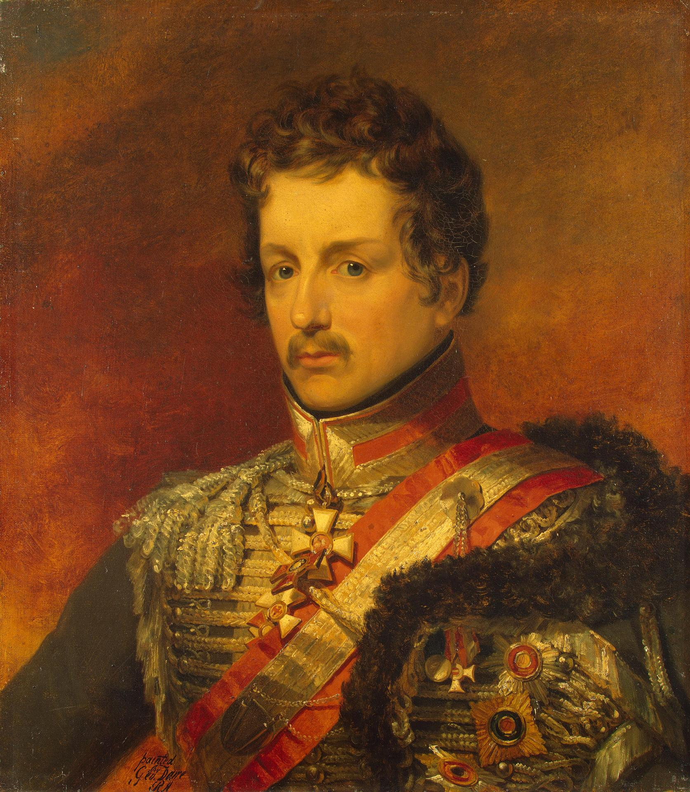

큰 기대 큰 실망 - 비텝스크 (Vitebsk) 전투
게시: 2020-01-20T06:30:54+09:00
러시아 제1군의 뒤를 추격하던 뮈라는 최소한 러시아군이 어디로 움직이는지는 파악하고 있었습니다. 뮈라의 보고를 통해 러시아 제1군이 드리사의 방어진지에 자리를 잡고 앉았다는 소식을 접한 나폴레옹은 쾌재를 올렸습니다. 드디어 러시아군과 결전을 벌일 기회를 잡았다고 생각한 것입니다. 여태까지 빌나에서 여러가지 행정 업무에 발목이 잡혀 있던 그는 제롬의 바보짓 때문에 바그라티온을 놓친 실수를 반복하지 않기 위해 직접 군을 지휘하기로 했고, 당장 말에 올라 드리사를 향해 달렸습니다. 나폴레옹의 기본 계획은 퓰과 알렉산드르의 실수를 100% 활용하는 것이었습니다. 즉 드리사의 러시아 제1군의 남동쪽으로 우회하여 바그라티온의 러시아 제2군과의 합류를 원천적으로 봉쇄함과 동시에 러시아군의 보급로를 막고 내친 김에 러시아군을 북동쪽, 그러니까 페체르부르그를 향해 전진하던 막도날드와 우디노의 군단들이 있는 쪽으로 몰아붙이고자 한 것입니다. 이는 그랑다르메의 전성기에 나폴레옹이 훌륭하게 써먹던 작전 스케일이었습니다. 그러나 이번에는 그렇지 못했습니다. 알렉산드르가 드리사에서 5일이나 꾸물거렸음에도 불구하고, 프랑스군은 드리사를 우회하는 포위망을 만드는데 실패했고, 그러는 사이에 러시아군은 비텝스크를 향해 철수해버렸습니다. 나폴레옹의 원대한 작전을 실현하기에 프랑스군의 발은 이미 너무 느려졌던 것입니다. 이는 프랑스군의 질적 수준이 그 양적 팽창을 따라가지 못했기 때문이기도 했지만, 나폴레옹 본인의 문제도 있었습니다. 이렇게 중요한 원정에서, 부하 원수들에게 최전선을 맡겨두고 저 먼 후방 빌나에서 뭉개고 있는 것은 과거의 나폴레옹이라면 상상하기 어려운 일이었습니다. 무엇보다, 나폴레옹이 무거운 엉덩이를 들고 직접 드리사를 향해 빌나를 떠났던 7월 16일은 이미 러시아군의 마지막 부대가 드리사를 떠나고 있던 시점이었습니다.

(오스테르만-톨스토이 Alexander Ivanovich Ostermann-Tolstoy 백작입니다. '전쟁과 평화'를 지은 러시아의 대문호 레오 톨스토이와 성이 비슷해서 긴가민가 하시겠습니다만 레오 톨스토이도 이 가문 출신이 맞습니다. 1770년 생으로서 당시 42세이던 그는 원래 성이 러시아 유력 귀족 가문인 톨스토이였습니다만, 역시 유력 가문이었던 친할머니의 집안에 자식이 없어 끊어지게 되자 그 Ostermann 가문의 이름과 작위, 재산을 물려받아 Ostermann-Tolstoy가 되었습니다. 그는 전쟁이 끝난 뒤에 유럽과 이집트 등을 여행하며 두번 다시 러시아로 돌아오지 않았고, 천수를 누리며 잘 먹고 잘 살다가 결국 스위스에서 죽었습니다. 그는 자식을 두지 않았는데, 대신 유럽 곳곳에 혼외자는 매우 많이 두었습니다. 원래 그의 정실 부인은 러시아 유력 가문의 대공녀였는데, 사이는 좋지 않았던 듯 합니다. 아마 러시아로 귀국하지 않은 이유가 러시아에는 부인이 있기 때문 아니었을까 합니다.) 이미 말씀드린 바와 같이 비텝스크로 후퇴하던 러시아군은 뮈라의 추격을 받고 있었는데, 나폴레옹이 직접 뒤를 따르고 있다는 것이 자극이 되었는지 프랑스군은 마침내 러시아군의 후위를 따라잡았습니다. 그리고 전과는 다르게 러시아군도 이번에는 뒤돌아서서 싸웠습니다. 7월 25일 오스트로브노(Ostrovno)라는, 비텝스크에서 30km 서쪽으로 떨어진 마을에서의 일이었습니다. 러시아의 후위 부대는 제4군단으로서, 오스테르만-톨스토이(Alexander Ivanovich Ostermann-Tolstoy) 장군이 지휘하는 1만2천의 병력이었고, 여기에는 보병과 기병은 물론 무려 66문의 대포까지 갖춘 막강한 부대였습니다. 이들을 따라잡은 부대는 낭수티(Nansouty) 장군이 이끄는 기병 사단이었는데, 이들은 수적 열세에도 불구하고 과감한 돌격으로 러시아군을 격파하고 포로도 150명을 붙잡았습니다. 곧 뮈라의 본대도 현장에 도착하여 힘을 보탰습니다. 특히 뮈라는 평소처럼 기병 돌격을 직접 선두에 서서 지휘하며 러시아군을 몰아붙였습니다. 그러나 딱 여기까지였습니다. 러시아군이 숲 속으로 물러서서 전열을 가다듬고 포병을 배치하자 소수였던 프랑스 기병대는 더 이상 할 수 있는 것이 없었습니다. 오히려 프랑스군의 수적 열세를 눈치챈 오스테르만-톨스토이는 반격을 고려하고 있었는데, 프랑스 보병대가 때마침 현장에 도착하는 바람에 러시아군은 반격하지 않고 순순히 물러났습니다. 그날 저녁 러시아군이 비워준 오스트로브노를 점령한 프랑스군은 거의 아무 것도 남아 있지 않은 황량한 마을에 큰 실망감을 느꼈지만, 이 전투 소식을 접한 나폴레옹은 꽤나 흥분했습니다. 드디어 러시아군을 따라잡았고 또 러시아군이 싸울 의도를 보여주었기 때문이었습니다. 그는 빌나에 남아있던 외무부 장관 마레(Hugues-Bernard Maret)에게 편지를 써서 '우리는 엄청난 사건의 전야를 맞이하고 있다'라며 그의 기대감을 전했습니다.

(바사노 공작 Duc de Bassano 마레 Hugues-Bernard Mare 입니다. 그는 어려서부터 법률 교육을 받고 혁명 전에 고등법원에서 일했던 엘리트로서, 프랑스 혁명 당시 그 대의에 감명받아 혁명에 참여했던 인물이었습니다. 그는 정치적으로는 온건 개혁파에 속했고 실무 능력도 대단히 우수한 사람이었습니다. 러시아 원정 당시 까다로운 동맹인 오스트리아 및 프로이센을 구슬려 러시아 원정에 동참하도록 만든 것은 그의 공이라고 할 수 있습니다. 그는 나폴레옹의 백일천하 때도 그와 함께 했고 결국 부르봉 왕정에 의해 추방되었는데, 훗날 루이 필립 왕정 때 복귀하여 잠깐 총리직을 지내기도 했습니다.) 그 다음날 다시 비텝스크 쪽으로 전진하던 프랑스군이 오스트로브노에서 동쪽으로 7~8km 떨어진 떨어진 곳에서 다시 러시아군과 충돌이 벌어졌을 때 나폴레옹의 기대감은 현실화되는 듯 했습니다. 이 러시아군은 전날 오스트로브노에서 뮈라의 추격군과 교전하느라 힘을 뺀 오스테르만-톨스토이의 부대가 아니라, 그들을 교체해주기 위해 새로 파견된 코노브니친(Petr Konovnitsyn) 장군의 보병 사단이었습니다. 러시아군이 이렇게 후위 부대를 교체해줄 정도로 여유가 있었다는 사실은 의미하는 바가 컸습니다. 러시아군은 더 이상 탈출이 목적이 아니었고, 제대로 된 전투를 벌이기 위해 프랑스군의 전진을 늦출 시간을 벌자는 것이 목적이라는 것이 명백해 보였습니다. 이들은 하루 종일 프랑스군의 진격을 막다가 밤이 되자 슬그머니 후퇴했습니다. 이렇게 7월 26일도 흘러갔습니다. 러시아군은 과연 싸우려 했을까요 ? 바클레이는 정말 싸우려고 했습니다. 러시아군은 이미 너무 많이 후퇴한데다, 만약 여기서 또 후퇴할 경우 스몰렌스크까지 위험에 빠지게 되는 상황이었습니다. 비텝스크까지는 원래 벨라루스 땅으로서 사실상 러시아 본토는 아니었지만, 스몰렌스크부터는 진짜 러시아 땅이었습니다. 러시아 본토까지 프랑스군이 마음대로 짓밟게 내버려두고 또 후퇴할 수는 없었습니다. 그렇쟎아도 모스크바와 상트 페체르부르그에서는 러시아군의 이해할 수 없는 무작정 후퇴에 대해 불만이 들끓고 있었고, 이미 알렉산드르가 그 책임을 통감하며 물러난 상태였습니다. 여기서 더 물러났다가는 바클레이 본인이 모든 책임을 뒤집어 쓸 판이었습니다. 패배하여 물러나는 것은 있을 수 있는 일이지만, 싸워보지도 않고 도망치는 것은 더 이상 용납되지 않는 상황이었습니다. 바클레이는 비텝스크를 끼고 흐르는 서(西) 드비나 강(Western Dvina)의 동쪽에 자리를 잡고 전열을 가다듬고 있었습니다. 그는 이 강을 방어선으로 나폴레옹과 싸울 각오였습니다. 게다가 더 중요한 것이 있었습니다. 바그라티온의 제2군과 합류하기 위해서는 비텝스크에서 나폴레옹과 한판 붙으며 시간을 벌어야 했습니다.

(바그라티온과 다부가 맞붙은 살타노브카는 모길레프 바로 옆인데, 비텝스크와는 당시 보병 이동 속도로 약 9~10일 정도가 걸릴 거리였습니다. 비텝스크와 모길레프의 동쪽에 스몰렌스크가 보입니다.)
그런데 26일 밤, 여기서 나폴레옹도 바클레이도 원치 않았던 소식이 러시아 제1군에게 날아듭니다. 사흘전 남쪽 약 160km 떨어진 살타노브카(Saltanovka, 현재의 모길레프 Mogilev 인근)에서 벌어진 전투에서, 바클레이의 제1군과 합류하려 애쓰던 바그라티온의 제2군이 다부의 제1군단에게 패배했다는 소식이었습니다. 이건 정말 뜻 밖의 소식이었습니다. 바그라티온의 제2군은 무려 4만5천의 병력을 가지고 있었고, 다부의 병력은 고작 2만8천 정도에 불과했습니다. 원래 다부의 제1군단은 훨씬 더 많은 병력을 가진 강력한 군단이었지만 축지법을 쓰던 원수인 다부가 바그라티온이 바클레이와 합류하는 것을 막고자 무리한 강행군을 하고 있었기 때문에 병력이 많이 줄어있었던 것입니다. 이 살타노브카 전투도 다부가 바그라티온을 공격한 것이 아니라, 바그라티온이 또 다시 자신보다 먼저 드네프르(Dnepr, 영어로는 Dnieper) 강의 건널목인 모길레프를 점령한 다부를 몰아내기 위해 어쩔 수 없이 공격에 나서면서 벌어진 것이었습니다. 다부는 고작 2만8천의 병력만 가지고 있었지만 이미 일대의 지형지물을 다 파악하고 습지와 숲, 강을 끼고 방어진지를 구축해놓은 상태였습니다. 이런 다부에게 달려든 러시아군은 손발이 맞지 않으며 결국 패배했고, 바그라티온은 결국 다른 길로 돌아서 스몰렌스크로 향해야 했습니다.

(살타노브카 전투에서 러시아군을 이끌고 선두에서 돌격하는 라에프스키 Nikolay Nikolayevich Raevsky 장군입니다. 이 전투에서 그는 당시 16살, 11살이던 두 아들까지 데리고 선두에서 돌격했다고 알려졌습니다만 그건 라에프스키 장군 본인에 의해서 '전혀 사실과 다르다'라며 부인되었습니다. 그럼에도 불구하고 그는 뛰어난 지휘관이자 헌신적인 군인이었고, 1814년 알렉산드르 옆에서 함께 파리에 입성하는 영광을 누렸습니다. 라에프스키는 훗날 푸쉬킨과 친교를 맺었는데, 푸쉬킨의 작품 '예브게니 오네긴' 중 일부는 라에프스키의 딸 마리아의 발랄함에 영감을 받아 쓴 것이라고 합니다.) 일이 이렇게 되자 바클레이도 '죽이 되든 밥이 되든 싸운다'라던 결심을 달리 할 수 밖에 없었습니다. 바그라티온이 합류하러 오지 못한다는 것 말고도, 까딱하다간 다부와 나폴레옹 사이에서 포위 당할 처지에 놓인 것입니다. 바클레이는 내키지는 않지만 후퇴하기로 마음을 먹습니다. 하지만 이 역시 쉬운 일이 아니었습니다. 7월 26일 상황은 이미 프랑스군과 서로 멱살을 쥐고 땅을 뒹구는 정도까지는 아니더라도, 서로 주먹이 맞닿을 정도의 거리에서 대치 중인 정도는 되었습니다. 그런 상황에서 등을 돌리고 물러서다가는 뒤통수를 얻어맞기 딱 좋았습니다. 바클레이는 프랑스군과 러시아군 사이를 가로지르는 서 드비나 강을 십분 활용하기로 하고, 팔렌(Peter Graf von der Pahlen) 장군이 이끄는 기병대를 강 건너 프랑스군 진영 쪽으로 파견했습니다. 27일 하루 동안 시간을 끌라는 것이었지요. 그 사이에 그는 싸울 준비를 하고 있던 러시아군 각 부대들에게 '동작 그만, 모두 짐을 싼다, 실시' 명령을 내렸습니다. 그러면서도 다음날 아침에는 프랑스군에게 싸울 준비가 다 되어 있는 것처럼 위장했습니다. 다음날 아침이 되어 나폴레옹이 직접 강 건너 비텝스크의 첨탑이 보이는 곳까지 진출하여 전장을 살폈습니다. 그의 눈에 강 건너 러시아군은 확실히 전투 대오를 갖추고 있는 것처럼 보였습니다. 그 일대는 사방이 탁 트인 평야 지대라서 병력이 숨거나 할 여지가 전혀 없었습니다. 다만 그날 아침 당장 서 드비나 강 서안에 싸울 준비가 되어 있는 부대는 그의 의붓아들 외젠이 거느린 제9 군단 소속 2개 보병 사단 밖에 없었습니다. 그 외에 전날 교전했던 낭수티 장군의 제1 기병군단의 일부 부대가 근처에 있긴 했지만 그 숫자가 매우 작았습니다. 이건 매우 이례적인 일이었습니다. 나폴레옹이 직접 러시아군 약 9만을 강 하나를 사이에 두고 대치하고 있는데 휘하에 고작 보병 2개 사단 1만 정도의 병력 뿐이다? 이건 나폴레옹이 얼마나 서둘렀는지를 보여주는 것이기도 하지만 프랑스군의 기동력이 얼마나 떨어진 상태인지를 보여주는 것이기도 했습니다. 이 상태에서 서서히 강가로 전진하던 부르지에(Jean-Baptiste Broussier) 장군의 제14 사단도 쉽지 않은 하루를 보내야 했습니다. 팔렌 장군이 이끄는 러시아군 기병대가 집요하게 이들의 전진을 방해하며 측면을 노렸던 것입니다. 덕분에 브루지에는 방진을 구성하고 대포를 쏘아대며 러시아군 기병대를 상대하느라 몇 시간 동안 강가에 접근하지 못하고 지체해야 했습니다. 그러는 사이에 다른 보병 사단들과 함께 낭수티 장군의 제1 기병군단 전체가 마침내 현장에 도착하면서 팔렌 장군의 러시아군도 마침내 강 건너로 물러났습니다.

('비텝스크 전투에서 러시아군 기병대를 상대하는 파리 출신 징집병들'이라는 제목의 전쟁화입니다.)

(페터 폰 팔렌 Peter Graf von der Pahlen 백작입니다. 이름에서 쉽게 알 수 있듯이 이 사람도 러시아군 내에 많았던 발트해 연안 독일계 귀족 가문 출신입니다. 그의 가문은 대대로 남작 칭호를 가지고 있었는데 그의 아버지 Peter Ludwig von der Pahlen가 알렉산드르의 아버지인 파벨 1세의 암살에 가담한 공로(?)로 알렉산드르 1세로부터 백작 칭호를 받았습니다. 7월 27일 팔렌 장군의 활약은 매우 뛰어난 것이어서, 평상시 칭찬에 인색하던 바클레이도 크게 칭찬했다고 합니다.) 이 광경을 보며 나폴레옹은 이렇게 병력이 부족한 상황에서 굳이 오늘 강을 건너 러시아군과 교전할 필요는 없다는 결론을 내렸습니다. 저렇게 강 건너의 러시아군이 결연한 의지로 전투 대오를 갖추고 있으니, 그날 밤 사이에 속속 도착할 프랑스군 증원 부대를 기다렸다가 다음날 아침에 싸우면 된다고 생각한 것이지요. 그는 현재 그 자리에서 전군이 숙영하도록 명령을 내렸습니다. 밤사이 강 건너에서는 러시아군의 화톳불들이 가득히 보였습니다. 벌써 4주 넘게 전투다운 전투도 없이 그저 지겹게 주린 배를 움켜쥐고 행군만 해야 했던 프랑스군에게, 내일 드디어 결전이 벌어진다는 소식은 병사들에게 전투에 대한 걱정보다는 이제 드디어 이 지긋지긋한 원정에 결말이 다가온다는 기쁨으로 받아들여졌습니다. 병사들은 그 다음날 축제에 나가듯이 가장 좋은 정복을 배낭에서 꺼내어 솔질을 하고 오랜만에 두르는 하얀 십자 벨트에 파이프 클레이(pipe clay, 담배 파이프를 만드는 하얀색 점토인데, 흰색 가죽제품의 손질에도 사용되었습니다)로 손질을 하며 몸 치장을 했습니다. 제2차 페르시아 전쟁 때 테르모필라에(Thermopylae)에서 페르시아 대군과의 결전을 기다리던 300명의 스파르타군도 마지막 순간에 손톱 손질과 머리 빗질을 하며 보냈다는데 아마 꼭 그 모습이었을 것입니다.
(파이프 클레이로 흰 가죽 혁대를 손질하는 모습입니다.)
그러나 다음날 아침, 싸움닭처럼 한껏 멋을 내고 대오를 갖춘 프랑스 병사들의 눈에 들어온 것은 텅빈 강 건너 평원의 모습이었습니다. 프랑스군이 들뜬 기분으로 잠을 청하는 사이, 러시아군이 모조리 철수해버린 것입니다. 병사들은 물론, 나폴레옹이 느꼈을 황당함은 말할 수 없었을 것입니다. 그러나 황당함도 잠시, 병사들은 모처럼 꺼내 입었던 정복을 다시 벗어 배낭에 넣고 여태까지 입었던 투박한 작업복 바지와 헝겊 모자로 갈아입어야 했습니다. 다시 길고 지루하고 배고픈 추격전이 시작되어야 했습니다.
Source : 1812 Napoleon's Fatal March on Moscow by Adam Zamoyski https://en.wikipedia.org/wiki/Alexander_Ivanovich_Ostermann-Tolstoy https://en.wikipedia.org/wiki/Peter_Graf_von_der_Pahlen https://en.wikipedia.org/wiki/Battle_of_Ostrovno https://en.wikipedia.org/wiki/Battle_of_Vitebsk_(1812)